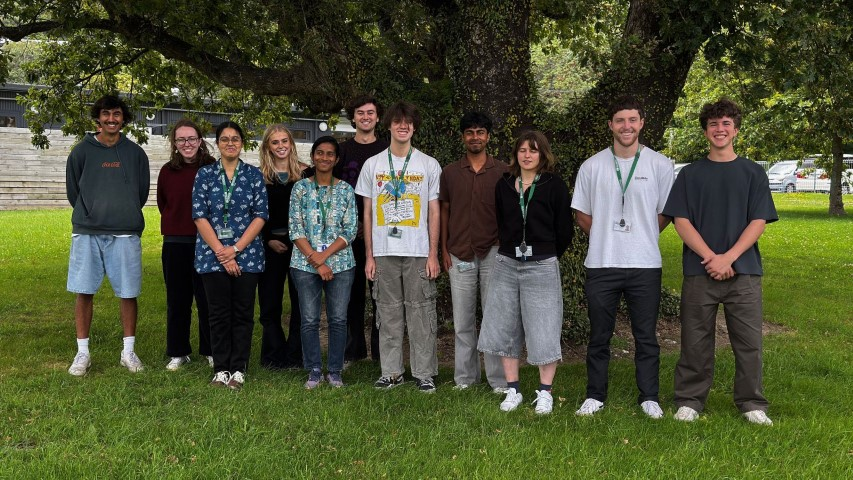
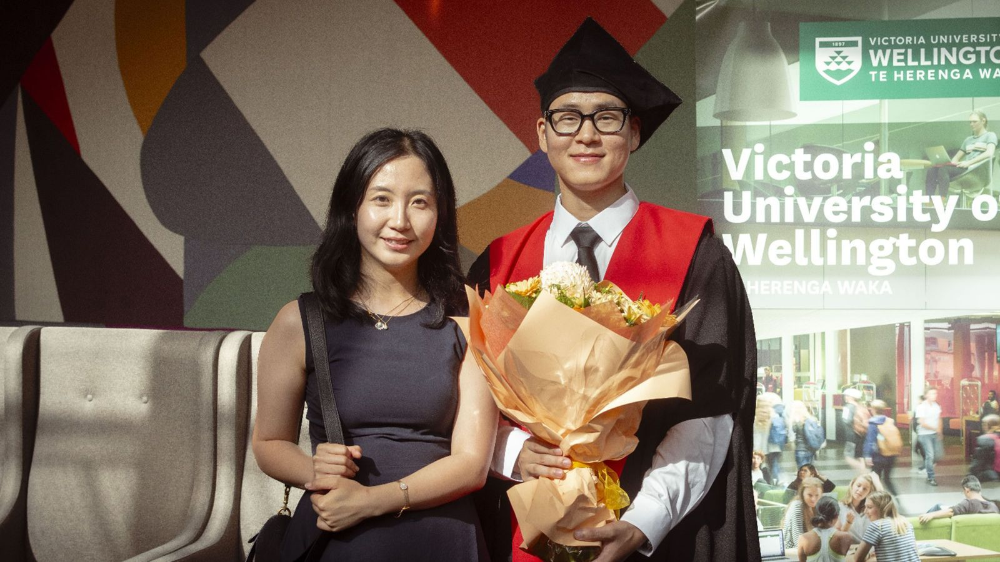

New Zealand Prime Minister Christopher Luxon hit a big green button to trigger the final stage for OpenStar’s first reactor, “Junior”, to levitate a 550kg superconducting magnet in 40 square metre cloud of superhot plasma for around 20 seconds as a “lifter” electromagnet at the top of the chamber counteracted gravity. It was the first public demonstration of OpenStar’s technology and was billed as a crucial step on the path to producing “virtually limitless power” through fusion.

Each summer, a cohort of emerging researchers joins the Paihau—Robinson Research Institute through the summer research assistant programme—a highly valued initiative that enriches both the students and the Institute itself. Over the course of ten weeks, students not only develop technical knowledge and professional skills but also gain a rare opportunity to experience research as a career.
Professor Chris Bumby of Victoria University's Robinson Research Institute, is part of a project looking at nose to tail mining focusing on extracting antimony and tungsten from gold mine tailings.

When Yukai Qiao left his hometown in central China to pursue a PhD in New Zealand, he knew he was taking a leap into the unknown. What he didn’t know was how much this journey would transform the way he thinks, works, and lives—at both a personal and a professional level.